Navigation
- Carstensz Pyramid
- PROGRAMS & SCHEDULE
- Our most imporant expeditions
- LAST CARSTENSZ REFERENCIES
- History of climbing the summit
- Legendary Carstensz climbers
- Seven Summits
- 7 Summits - History
- 7 faces of Carstensz Pyramid
- Photos from climbing
- The nature and flora
- Trekking around Carstensz
- Climbing routes to the summit
7summits Carstensz best Base camp
- The Tribes and People
- Climate and weather
- Climbing permits
- How to go
- The Highest Mountain of Papua New Guinea
- Why to go with us
- Malaria
- Wrote about us
- References
- Links
- Contact us
- Download


7 summits the most beautiful Base Camp
Carstensz Pyramid – Puncak Jaya – Base Camp in Lake valley is one of the most beautiful Base camps in the world, and it is surely the most lovely one in the 7 summits project.
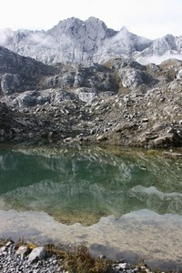
Carstensz Pyramid view from one of the lakes Photo©JahodaPetr.com
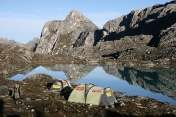
Photo©JahodaPetr.com
The Base camp lies at the height of 4300m (14 107 ft). It is situated in a romantic picturesque alpine valley just next to a glacial lake, which serves as a source of drinkable watter.
Just from the Base camp there are picturesque views of the Carstensz pyramid (Puncak Jaya) but also of Middle Peak, Nga Pulu and to massive of New Zeland pass.
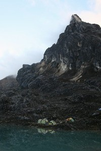
Midle Peak Photo©PetrJahoda.com
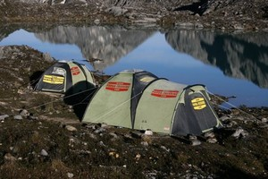
Photo©JahodaPetr.com
It often rains in the Base camp but when the weather is fine and the sun shines it is tempting to bath in glacial lake. When there is no wind, the surface of the lake looks as a mirror and the temperature on the sun can reach up to 30°C (86 °Fahrenheit). And this weather really comes off time from time?.
In December 2007 we erected two big tents COLEMAN (Duo 5 and Duo 3) in the Carstensz Pyramid Base Camp. The tent Duo 5 is used as a day room. You can cook and stay during the day there. Tent Duo 3 is used as a store.
We put up these tents to serve to all climbers. Anybody who comes to Carstensz Base Camp can use our tents. In each tent there is a list of rules (conditions) that need to be followed when you use the tents. Obey these rules, please. This is to ensure that the tents can serve all climbers.
Enjoy the time spent in the Base Camp. We wish you good luck when climbing the Carstensz Pyramid. Climb safely, it would be a pity not to come back to the Base camp.
Base Camp Equipment
There is a complete set of equipment (eq. to Rescue Hut) in a smaller tent locked by a lock with a number code. There are several sleeping mats, tents, sleeping bags, food, oil stove, petrol, cooking pot, first aid kit, three transmitters, multiple AA and AAA batteries, standar hiking equipment, climbing irons, ice axe, hooks.
In case your expedition gets to an emergency situation, call us from a satellite phone. You will find the phone number on the Contact page; it is also advertised at the tents entrance. We will tell you the number for the lock. Let us now what did you depleted for us to know what to replace. Don't forget to lock the tent with the same code.
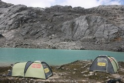
Photo©JahodaPetr.com
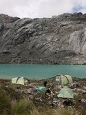
Photo©JahodaPetr.com
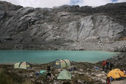
Photo©JahodaPetr.com
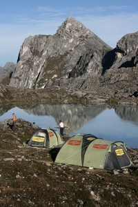
Photo©JahodaPetr.com
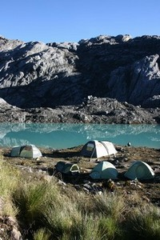
Photo©JahodaPetr.com
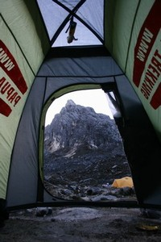
Photo©JahodaPetr.com
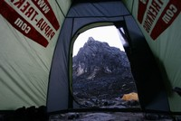
Photo©JahodaPetr.com
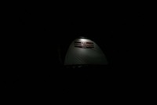
Photo©JahodaPetr.com
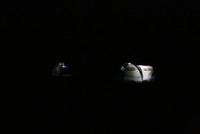
Photo©JahodaPetr.com
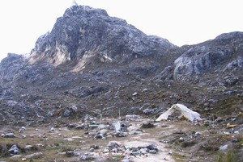
That's all what left from our big tents in Base Camp Photo©JahodaPetr.com
Broaking news Yet in July 2008, the Base Camp was still in place. In August 2008, there were only ruins left. The tribesmen have completely ransakced it. We apologize for this to our clients as well as to other expeditions. Our Base Camp does not exist any more. We are currently not considering building a new Base Camp. The erection of this Base Camp has cost us approximately 18– 20 thousand USD (including the price of the equipment as well as the very high costs for transportation. This is quite a luxury for such a short term expedition.